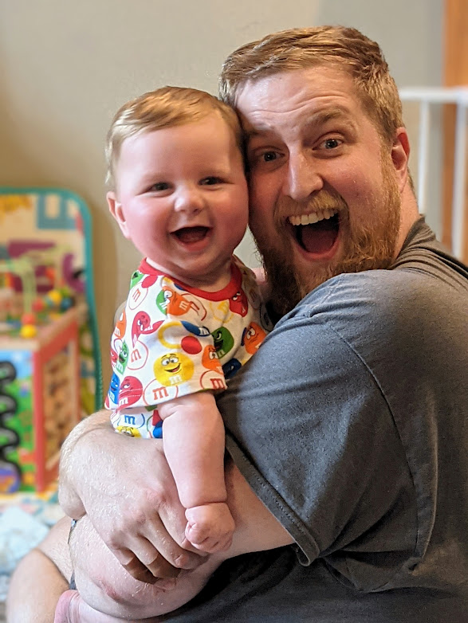

Meet Donnie
Your local Fix-It Guy

I’ve been a locksmith since 2004, starting out in a small 3 man shop learning the trade from my Dad. Over the years I’ve worked in Residential (Mom&Pop), Commercial(Large Metro Locksmith) and Institutional(Casino) Locksmithing. Ive mastered just about every aspect of the physical security industry : steel door and frame tear-out/install, large complex masterkey systems and vuilding rekeys, Power Door Operator service and installation, Access Control System Installation as well as Programming and end user training. And my passion over the years has been digging deeper into the overlap between locks, electronics, software, and smart home tech.
These days, I specialize in solving the kinds of problems that don’t have simple answers — combining hands-on repair work with technology solutions that actually make life easier.
The “Send Donnie” Guy
At every company I’ve worked for, I’ve been the guy they call when something gets tricky. The jobs where the wiring is a mess, systems don’t talk to each other, or nobody quite knows the right answer.
Instead of contractors pointing fingers, you get one person who can often handle it end to end: spec it, quote it, install it, wire it, configure it, explain it, and support it.
Design it. Install it. Wire it. Fix it. Explain it.

Hands-On + Tech-Savvy
Over the years, my work naturally evolved into the tech side of things. I’ve designed and installed access control systems, integrated power door operators, built custom software solutions/integrations, and managed the IT infrastructure for a 50+ person business.
The lock and security industry has become increasingly tech-heavy — and that’s where I thrive. I love solving a tough puzzle, building a custom solution, and taking care of the weird problems other people pass off.

Why I Do This
I started this business because I wanted the flexibility to be there for my family, especially my youngest son, who has special needs and keeps us on our toes. This work lets me take care of both my customers and my family — and that balance means everything!
I’ve lived in the Hastings area for over 10 years and grew up nearby in Cottage Grove. You might know me as Donnie the Bingo Guy from Boombox Bingo around town. Same Donnie, same friendly energy, just fixing things instead of calling songs.

How I Work
- Honest recommendations and fair quotes
- No pressure, hard sales, or nonsense
- Friendly, respectful, and easy to work with
- Clear communication, including ETA updates
- 20+ years professional locksmith experience
- LGBTQ+ friendly and inclusive service
- Free general ballpark estimates over text with photos
- Free on-site estimates in the Hastings area
If I do the work, I stand behind it — and I’m always happy to help with ongoing support for smart home systems, cameras, access control, and home networks within reason.
Let’s Make Your Life Easier
If something’s broken, frustrating, or just not working the way it should, call or text me. I’ve probably seen it before.
Call or text (651) 829-9529
Texting is always OK.